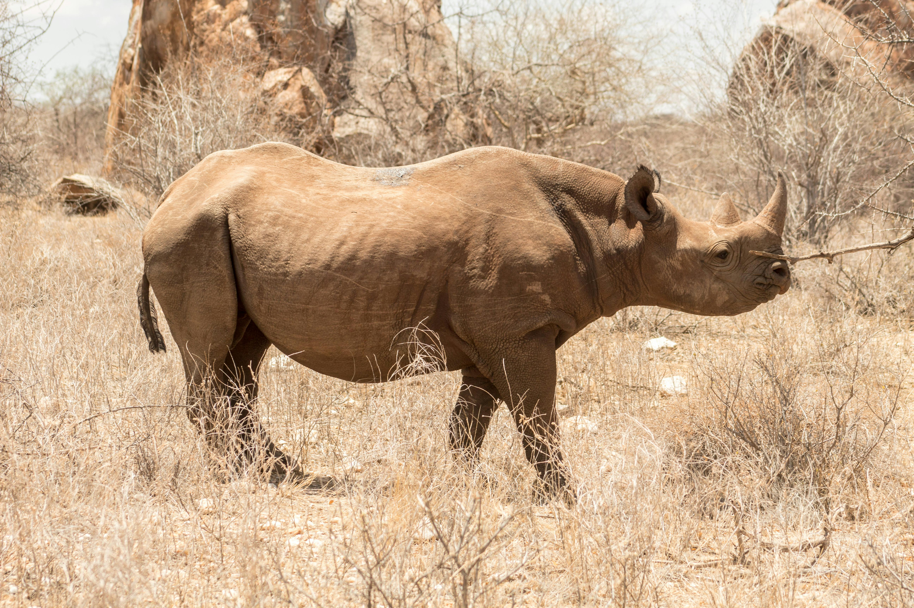

The African Rhino
Diet & Habitat
Diet: Herbivore. Black rhinos are browsers (eating leaves and twigs), while White rhinos are grazers (eating mostly grass).
Habitat: They can be found in various environments ranging from desert scrubland to woods and grasslands.
Fun Facts
- Rhino horns are made of keratin—the same protein found in human hair and fingernails.
- Despite their massive size, rhinos can run at speeds up to 30-35 mph.
- The name "Rhinoceros" comes from the Greek words for "nose horn."